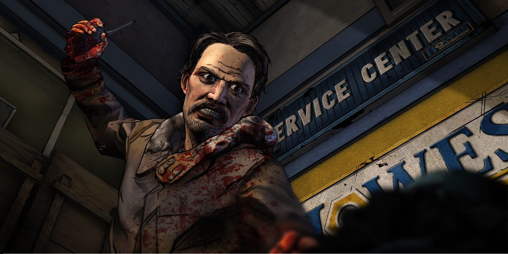
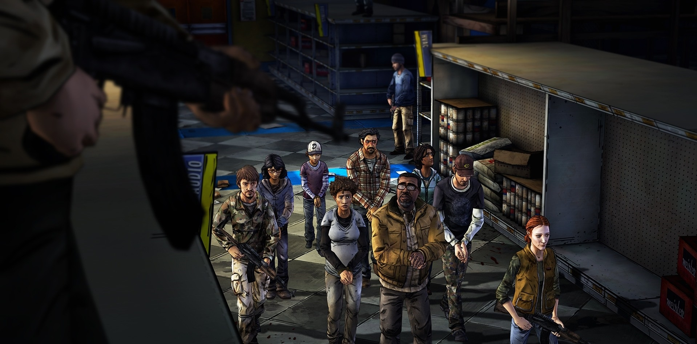
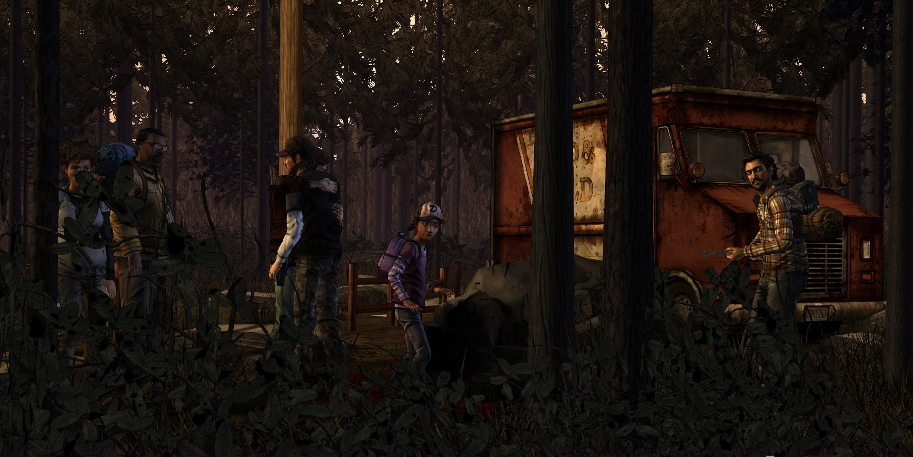
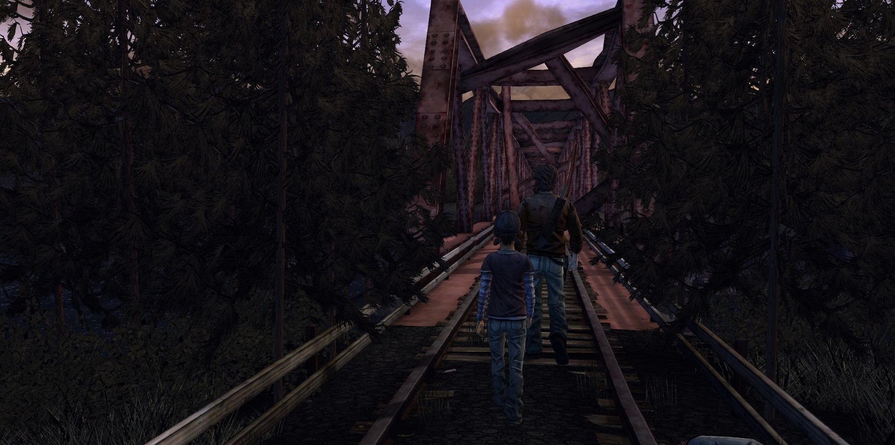

The Walking Dead: Season 2
The Walking Dead: Season Two is an episodic graphic adventure based on Robert Kirkman's The Walking Dead comic book series and developed by Telltale Games. It is the sequel to The Walking Dead, with the episodes released between December 2013 and August 2014, and a retail collector's DVD edition planned at the conclusion of the season. The game employs the same narrative structure as the first season, where player choice in one episode will have a permanent impact on future story elements. The player choices recorded in save files from the first season and the additional episode 400 Days carry over into the second season. Clementine, who was the player's companion during the first season, is the player-character in Season Two.
Season 2, retitled The Walking Dead: Season Two, is the second set of episodes for Telltale Games' award-winning The Walking Dead and the successor of Season 1. It was confirmed by Telltale Games in July 2012, due to the big success of the game. Your choices made in Season 1 and the "400 Days" DLC will affect the decisions in Season 2. Although "400 Days" is not a direct part of the story thread joining Seasons 1 and 2, the player's actions in "400 Days" will affect some elements of Season 2. If you haven’t played "400 Days", the elements that would have been affected will be seamlessly pre-determined by the game.
The Walking Dead: Season Two follows on the first game, and coincides with events of the comic, in which a zombie apocalypse has occurred, turning humans that are bitten or die into zombies, or "walkers"; the only way to stop this conversion is to damage the brain. The game is mostly set more than a year following its predecessor. While the game starts in Georgia, the setting moves to more northern locales as the survivors head towards Michigan, believing there is a large survivor camp there. The second season follows Clementine (Melissa Hutchison) a young girl who has been able to survive the walkers thanks to the help of Lee Everett (Dave Fennoy). At the start of the apocalypse, Lee helps to protect Clementine and offers to help her find her parents who had gone to Savannah; they join several survivors in their journey. When Clementine is captured, a bitten Lee rescues her, but both realize her parents have become walkers. She is forced to choose between shooting him or leaving him to reanimate, before venturing off on her own.
Similar to the previous season, The Walking Dead: Season Two is a point-and-click adventure game. The player, in control of Clementine, can direct the character around the environment, examine and interact with various scenery elements and collect and use objects to advance the story. The player can also initiate conversations with non-player characters via conversation trees. Certain replies from other characters may offer the player multiple choices to select from, including the option to stay silent, with a limited amount of time to make the selection; if the player does not select an option, the conversation will continue as if they had stayed quiet. Such choices can affect how the other characters will later react to Clementine which can influence later events in the story. Other scenes are more action-oriented, requiring the player to complete quick time events to avoid Clementine or her allies from getting killed. If the player fails these events, the game will restart at the start of such scenes. Such action scenes may also require the player to make a key decision within a limited time frame, such as which of two characters to save from attacking walkers.
The player's choices and actions will impact story elements in later episodes; for example, a character that the player does not choose to be saved will not appear in later scenes. Season Two also incorporates the player's choices from the first season and the DLC 400 Days, via the saved game file from these games, to influence the story and events in these episodes.